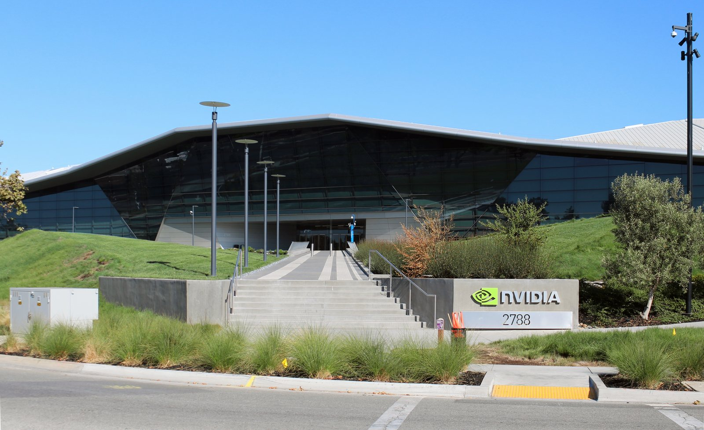

Il 14 settembre 2026 è stata la giornata peggiore per il settore dei semiconduttori da inizio luglio. Il PHLX Semiconductor Index (l'indice di Philadelphia che raggruppa i principali produttori di chip quotati negli USA) ha perso il −6% in una singola seduta. Il catalizzatore: un saggio pubblicato nel weekend da Dario Amodei, CEO di Anthropic, in cui invita l'industria dell'intelligenza artificiale a "prendere fiato" — frenare il ritmo di sviluppo per consentire alla sicurezza di recuperare terreno. Sam Altman (OpenAI) ed Elon Musk (xAI) hanno concordato pubblicamente. Nvidia ha ceduto il −3,26%.
Perché conta: i chip sono l'oro dell'intelligenza artificiale. Se i tre CEO più influenti del settore dicono che l'IA deve rallentare, meno data center verranno costruiti e meno GPU (unità di elaborazione grafica — Graphics Processing Units, i chip specializzati per l'IA) verranno ordinate. Nvidia, che vende l'80% delle GPU per l'IA, è il primo a essere colpito da una tale narrativa. Il −6% dell'indice Philadelphia in un solo giorno vale miliardi di capitalizzazione bruciati.
Il saggio di Amodei: "pace the frontier" (tenere il passo sicuro — rallentare alla frontiera)
Dario Amodei, CEO e cofondatore di Anthropic, ha pubblicato domenica 13 settembre un lungo saggio intitolato "Pace the Frontier". La tesi centrale: lo sviluppo dei modelli di AI (intelligenza artificiale) sta correndo troppo veloce rispetto alla capacità dell'industria di garantirne la sicurezza. Amodei ha scritto: «Per troppo tempo il settore ha mentito» sui rischi reali dell'IA, e ha invitato le aziende tech a impegnarsi in una sorta di moratoria volontaria sui modelli di frontiera (frontier model — modello IA di ultima generazione).
Amodei ha precisato che "rallentare" non significa interrompere il training (addestramento) dei modelli esistenti né bloccare la ricerca. L'obiettivo è dare tempo ai team di safety (sicurezza dell'IA — ramo della ricerca che studia come rendere sicuri i sistemi di IA) di sviluppare strumenti di valutazione e controllo adeguati prima che i modelli superino nuove soglie di capacità.
💡 Impara: GPU (Graphics Processing Unit — unità di elaborazione grafica)
Nata per i videogiochi, la GPU è oggi il cuore di tutta l'intelligenza artificiale generativa. Esegue in parallelo milioni di calcoli simultanei, il che la rende ideale per il "training" (addestramento) e l'"inference" (inferenza — il momento in cui il modello risponde) dei modelli AI. Nvidia controlla circa l'80% del mercato delle GPU per l'IA. Ogni grande data center di OpenAI, Google o Amazon acquista migliaia di GPU Nvidia. Quando il sentiment sull'AI cambia, Nvidia è la prima a sentirne le conseguenze in borsa.
La reazione del mercato: chi ha perso e chi ha guadagnato
| Titolo | Variazione 14 set | Settore |
|---|---|---|
| PHLX Semiconductor Index | −6,0% | Indice chip |
| Micron Technology | −4%+ | Memoria DRAM/NAND |
| Intel | −4%+ | Microprocessori |
| Marvell Technology | −4%+ | Chip di rete/AI |
| Applied Materials | −4%+ | Attrezzature per semiconduttori |
| Nvidia | −3,26% | GPU per AI |
| Salesforce | +4,73% | Software CRM/cloud |
| IBM | +2,36% | IT enterprise/cloud |
| Alphabet (Google) | +2,15% | Search/cloud/AI |
La rotazione settoriale è chiara: venduti i chip (hardware IA), acquistati i software (applicazioni aziendali). La logica: se il ritmo di sviluppo dei nuovi modelli AI rallenta, l'effimera domanda di GPU per il training di nuovi modelli si riduce. Ma le aziende che già usano l'IA nei propri prodotti — come Salesforce nei CRM (Customer Relationship Management — software di gestione della relazione con i clienti) o IBM nei servizi enterprise — continuano a generare valore indipendentemente dal ritmo di sviluppo dei modelli base.
SoftBank a Tokyo: −11% in una seduta
Il contagio ha attraversato l'Atlantico e il Pacifico. A Tokyo, SoftBank ha perso l'11% in una singola seduta: è il principale investitore nel fondo Vision Fund di SoftBank che ha scommesso decine di miliardi di dollari sulle startup AI — da Arm Holdings a ByteDance. Le quotazioni di SoftBank riflettono il valore dei suoi investimenti in startup: se l'IA rallenta, le valutazioni del portafoglio scendono.
Anche i futures del Nasdaq americano erano scesi del −1,5% nella notte tra domenica e lunedì prima dell'apertura di Wall Street, segnalando che l'onda era arrivata in anticipo rispetto alla seduta regolare.
💡 Impara: Frontier Model (modello di frontiera — IA di ultima generazione)
Un "frontier model" è un modello di intelligenza artificiale che rappresenta il limite massimo delle capacità attuali — come GPT-4, Claude o Gemini. "Frontiera" indica che si trova all'avanguardia della ricerca: ogni nuovo modello di frontiera supera il precedente in termini di ragionamento, comprensione del linguaggio e capacità multi-modale. Addestrare questi modelli richiede enormi quantità di chip specializzati (GPU), energia elettrica e dati. Rallentare lo sviluppo di frontier model riduce direttamente la domanda di GPU, spiegando il crollo dei chip il 14 settembre.
Le posizioni di Altman, Musk e la risposta di Meta
Sam Altman, CEO di OpenAI, ha condiviso il saggio di Amodei aggiungendo: «Dario ha ragione su questo. È ora che il settore si assuma responsabilità più serie». Elon Musk, a capo di xAI (la startup AI che ha sviluppato Grok), ha scritto su X: «Concordo. Stiamo costruendo qualcosa di più grande di noi e dobbiamo capire cosa stiamo costruendo prima di andare oltre».
Meta e Google non hanno commentato ufficialmente. Il silenzio è significativo: entrambe le aziende stanno investendo miliardi nello sviluppo dei propri modelli di frontiera (Llama per Meta, Gemini per Google) e una moratoria volontaria implicherebbe cedere terreno competitivo a chi non si ferma. La Community Note (nota della comunità) di cybersecurity esperta su X ha sottolineato che «rallentare senza un accordo vincolante premia solo i non-firmatari».
Quanto vale il mercato dei chip per l'AI: il contesto
Secondo le stime pre-annuncio di IDC, il mercato dei chip per l'intelligenza artificiale valeva circa 150 miliardi di dollari nel 2025 e si attendeva una crescita al 35% annuo fino al 2030. Nvidia da sola genera l'80% dei propri ricavi dalla divisione data center, cresciuta del +121% nell'ultimo trimestre fiscale grazie alle GPU per AI. Un rallentamento anche solo del 10-15% nel ritmo di costruzione dei data center si tradurrebbe in decine di miliardi di ordini ritardati o annullati.
📌 Da ricordare — 14 settembre 2026
PHLX Semiconduttori −6% (peggior giorno da luglio) · Nvidia −3,26% · Micron/Intel/Marvell/Applied Materials −4%+ · SoftBank Tokyo −11% · Salesforce +4,73% · IBM +2,36% · Causa: saggio "Pace the Frontier" di Amodei (Anthropic), condiviso da Altman (OpenAI) e Musk (xAI)